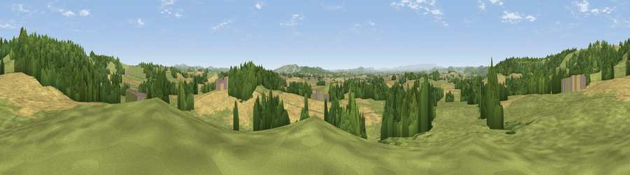

Viewpoint near Little Cowarne
#18443 in England · top 51% of its area beats it · near Little CowarneThe view, rendered

A 360° render of this exact spot computed from the terrain model, tree cover and land cover — summer colours, afternoon light, calibrated against photographs of famous viewpoints. Real trees, hedges and buildings will differ in detail.
The panorama
Grey silhouette: terrain skyline in each direction (720 bearings, Earth curvature and refraction included). Dashed green: skyline with trees (+15 m) and buildings (+8 m) as obstacles. Blue strip: how far the ground is visible on each bearing.
Where the view opens
Wedge length = distance to the farthest visible ground on that bearing (vegetation-aware). Rings at 10, 25 and 50 km.
What fills the view
44% grassland · 34% cropland · 21% woodland ·
Angular shares of the visible panorama (visual magnitude), not map area. Landscape diversity 0.48 (0–1 Shannon).
Key numbers
More beautiful places nearby
The staircase of upgrades: each row has a higher view potential than everything closer. Driving times are estimates from straight-line distance, calibrated against real road routing — check an actual route before setting out.
| Place | Direction | Drive | Score |
|---|---|---|---|
| Viewpoint near Felton | SE · 1 km | ~2 min | 55.5 |
| Viewpoint near Little Cowarne | N · 1 km | ~3 min | 69.6 |
| Viewpoint near Pencombe | N · 4 km | ~10 min | 72.8 |
| Viewpoint near Dormington | S · 11 km | ~21 min | 73.0 |
| Seagar Hill | SSE · 11 km | ~21 min | 82.1 |
| North Hill | E · 18 km | ~32 min | 86.8 |
| Worcestershire Beacon | ESE · 19 km | ~32 min | 87.1 |
| Viewpoint near West Quantoxhead | SSW · 117 km | ~141 min | 87.9 |
52.14608, -2.60168 · source: screening · position refined by local search. Computed location — check access rights before visiting.